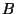
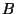

Next: 3. Naming objects in
Up: 2. The CM model
Previous: 2.9 Top-level groups
Contents
2.10 Proxy libraries
There is some syntactic support for setting up ``proxy'' libraries. A
proxy library  is a library with a single member which is another
library  so that the export lists of and coincide. Proxy
libraries are mainly used for the purpose of managing anchor names and
anchor environments (see Section 3.3).
is a library with a single member which is another
library  so that the export lists of and coincide. Proxy
libraries are mainly used for the purpose of managing anchor names and
anchor environments (see Section 3.3).
To avoid the need for cumbersome repetition of long export lists, a
proxy library can be set up by writing a description file which almost
looks like a regular library description--the only exception being
that the export list is syntactically empty. Moreover, there are a
some additional conditions:
- The proxy library cannot have a version number of its own.
- The proxy library must effectively (after conditional
compilation) have precisely one member.
- The single member must either be a CM library (possibly another
proxy) or a library component.
- In the case of the member being a library component (group),
this group must have an explicit export list. (CM insists on having
the export list of each library be spelled out explicitly at least
once, hence this rule.)
Next: 3. Naming objects in
Up: 2. The CM model
Previous: 2.9 Top-level groups
Contents
Matthias Blume
2001-07-19